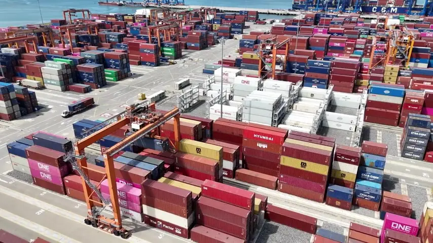

01
Evden Eve Nakliyat
Yeni evinize taşınırken eşyanızın miktarına, bina koşullarına ve taşıma mesafesine uygun bir plan oluşturalım.
Hizmeti inceleyin
Ev eşyasından ticari yüke, akaryakıttan soğuk zincire. Çağlar Lojistik ile ihtiyacınıza ve güzergâhınıza uygun taşıma planını birlikte oluşturalım.
Hizmeti seçin; taşıma kapsamını, teklif için gereken bilgileri ve sürecin ayrıntılarını inceleyin.
Yeni evinize taşınırken eşyanızın miktarına, bina koşullarına ve taşıma mesafesine uygun bir plan oluşturalım.
Hizmeti inceleyinDar merdivenler ve yüksek katlar için dış cephe asansörü seçeneğini değerlendirelim.
Hizmeti inceleyinMasa, dolap, arşiv ve ofis ekipmanlarınızı yeni işyerinize taşımak için envanter ve zaman planını birlikte hazırlayalım.
Hizmeti inceleyinBirkaç koli, bir mobilya veya ticari bir yük için taşıma ihtiyacınızı paylaşın.
Hizmeti inceleyinAnkara içindeki ev eşyası, işyeri veya ticari yük taşımanız için çıkış ve teslimat ilçelerini paylaşın.
Hizmeti inceleyinAnkara’dan başka bir şehre veya başka bir şehirden Ankara’ya taşıma ihtiyacınızı paylaşın.
Hizmeti inceleyinMotorin ve benzin sevkiyatında ürün, miktar ve yükleme-boşaltma koşullarını baştan netleştirelim.
Hizmeti inceleyinSıcaklık hassasiyeti bulunan gıda ve tıbbi malzeme sevkiyatlarında ürünün taşıma koşullarını birlikte netleştirelim.
Hizmeti inceleyinTaşınacak yükün türüne, hacmine, hassasiyetine ve teslimat ihtiyacına göre araç planlaması yapıyoruz. Ev eşyası taşıma ve ticari sevkiyat taleplerini kendi koşulları içinde değerlendiriyoruz.
Araç, personel, yükleme ve teslimat ayrıntılarını önceden görüşerek kapsamı anlaşılır bir taşıma planı oluşturmayı amaçlıyoruz. Filo yönetimi ve operasyon takibi desteği taleplerinizi de bizimle paylaşabilirsiniz.
Taşıma ihtiyacınızı paylaşınDoğru bir teklif, doğru bilgilerle başlar.
Araç gereksinimini yük, güzergâh ve teslimat bilgilerinize göre görüşelim.
Ev eşyası, büyük hacimli veya ticari yük talepleri.
Kolili ürün ve daha küçük hacimli taşıma ihtiyaçları.
Ürüne göre sıcaklık gereksinimi bulunan sevkiyatlar.
Motorin ve benzin taşıma talebine göre planlama.
Bina ve ekipman uygunluğuna göre değerlendirilen taşıma seçeneği.
Şehirler arası veya çok duraklı yüklerin planlanması.
Çankaya, Yenimahalle, Keçiören, Mamak, Etimesgut, Sincan, Altındağ, Gölbaşı ve Pursaklar başta olmak üzere Ankara içindeki taşıma talepleriniz için çıkış ve varış noktalarını paylaşın.
Ankara çıkışlı veya Ankara varışlı şehirler arası taleplerde yük miktarı ve teslimat takvimi üzerinden rota planlanır.
Eşya veya yük bilgilerini, çıkış-varış noktalarını ve istediğiniz tarihi iletin.
Araç, ekip, bina erişimi ve ek hizmetleri birlikte görüşelim.
Yükleme, güzergâh ve teslimat ayrıntılarını taşıma öncesinde teyit edelim.
Eşya veya yükün teslimini planlanan adreste birlikte kontrol edelim.
Evden eve, asansörlü, ofis, parça eşya ve yük, şehir içi, şehirler arası, akaryakıt-tanker ve frigolu taşıma taleplerinizi iletebilirsiniz. Hizmet kapsamı, araç ve tarih uygunluğu talebinize göre görüşülür.
Hizmet türü, çıkış ve varış noktaları, eşya veya yük miktarı, katlar, istenen tarih ve özel ihtiyaçlar teklif hazırlanmasına yardımcı olur. Fotoğraf ve ölçü paylaşabilirsiniz.
Bina erişimi, zemin, çalışma alanı ve ekipman uygunluğu değerlendirilir. Kat bilgisiyle birlikte bina önü ve balkon veya pencere fotoğrafını paylaşın.
Ankara çıkışlı veya Ankara varışlı taşıma taleplerinizi şehirler, yük bilgisi ve tarih ile iletebilirsiniz. Güzergâh ve teslimat takvimi görüşme sırasında netleştirilir.
Formdaki hizmet, güzergâh, tarih ve yük bilgileri bir WhatsApp mesajına eklenir. Mesajı WhatsApp’ta kontrol edip gönderdiğinizde talebiniz bize ulaşır.
Taşıma ayrıntılarını paylaşın. İhtiyacınıza uygun araç ve hizmet kapsamını birlikte belirleyelim.